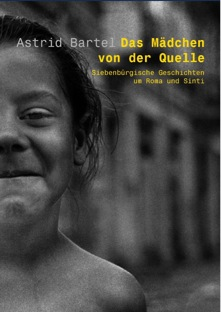

Immer wieder kreuzten Zigeuner den Weg der
Erzählerin. Sie wurden zu einem wesentlichen Teil ihres
Lebens: verwirrende, schmerzliche, aber auch bereichernde
Begegnungen. Man war sich zu Anfang völlig fremd. Doch dann
näherte man sich misstrauisch, aber neugierig und stellte
am Ende überrascht fest, wie sehr sich Wünsche und
Vorstellungen ähnelten.
Astrid Bartel erzählt einfache Geschichten mit viel Heiterkeit und oft mit einer liebenswerten Ironie. Sie hat ihre Kindheit und Jugend in Hermannstadt / Sibiu in Rumänien verbracht. Nach einem Germanistik-Studium in Köln lebt sie nun mit ihrem Mann und vier Söhnen in Berlin. Die bunten, eindringlichen Erlebnisse der Jugend sind ihr bis heute unvergessen geblieben.
Astrid Bartel: Das Mädchen von der Quelle
Geschichten um Roma und Sinti
hora-Verlag, Hermannstadt / Sibiu, 2005
162 S., 11 Zeichnungen
ISBN 973-8226-45-7.
13.50 €
Bestellmöglichkeiten:
- Im Siebenbürger-Shop:
http://www.siebenbuerger.de/shop - Direkt beim hora-Verlag in Hermannstadt/Sibiu:
Internet: www.hora-verlag.ro
Telefon aus Deutschland: 0040-269-211 839
E-Mail: mail@hora-verlag.ro
Postkarte: Editura hora, Strada N.D. Cocea 9, RO 550370 Sibiu